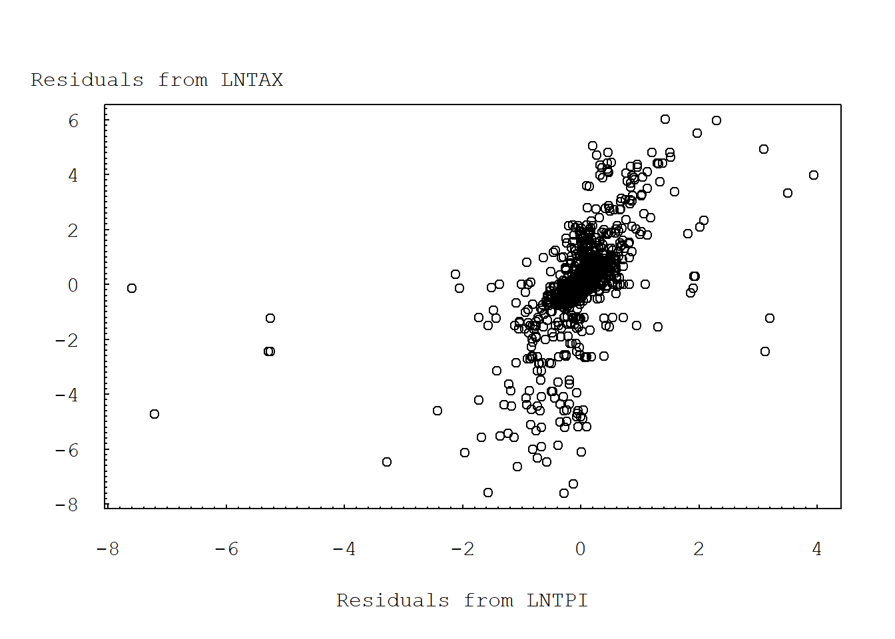

Chapter 3 Models with Random Effects
3.1 Import Data
# "\t" INDICATES SEPARATED BY TABLES ;
taxprep = read.table("TXTData/TaxPrep.txt", sep ="\t", quote = "",header=TRUE)
# taxprep=read.table(choose.files(), header=TRUE, sep="\t")Data for this study are from the Statistics of Income (SOI) Panel of Individual Returns, a part of the Ernst and Young/University of Michigan Tax Research Database. The SOI Panel represents a simple random sample of unaudited individual income tax returns filed for tax years 1979-1990. The data are compiled from a stratified probability sample of unaudited individual income tax returns, Forms 1040, 1040A and 1040EZ, filed by U.S. taxpayers. The estimates that are obtained from these data are intended to represent all returns filed for the income tax years under review. All returns processed are subjected to sampling except tentative and amended returns.
| Variable | Description |
|---|---|
| MS | is an indicator variable of the taxpayer’s marital status. It is coded one if the taxpayer is married and zero otherwise. |
| HH | is an indicator variable, one if the taxpayer is a head of household and zero otherwise. |
| DEPEND | is the number of dependents claimed by the taxpayer. |
| AGE | is the presence of an indicator for age 65 or over. |
| F1040A | is an indicator variable of the taxpayer’s filing type. It is coded one if the taxpayer uses Form 1040A and zero otherwise. |
| F1040EZ | is an indicator variable of the taxpayer’s filing type. It is coded one if the taxpayer uses Form 1040EZ and zero otherwise. |
| TPI | is the sum of all positive income line items on the return. is a marginal tax rate. |
| TXRT | is a marginal tax rate。 It is computed on TPI less exemptions and the standard deduction. |
| MR | is an exogenous marginal tax rate. It is computed on TPI less exemptions and the standard deduction. |
| EMP | is an indicator variable, one if Schedule C or F is present and zero otherwise. Self-employed taxpayers have greater need for professional assistance to reduce the reporting risks of doing business. |
| PREP | is a variable indicating the presence of a paid preparer. |
| TAX | is the tax liability on the return. |
| SUBJECT | Subject identifier, 1- 258. |
| TIME | Time identifier, 1-5. |
| LNTAX | is the natural logarithm of the tax liability on the return. |
| LNTPI | is the natural logarithm of the sum of all positive income line items on the return. |
3.2 Example 3.2: Income Tax Payments (Page 81)
In this section, we study the effects that an individual’s economic and demographic characteristics have on the amount of income tax paid. Specifically, the response of interest is LNTAX, defined as the natural logarithm of the liability on the tax return.
3.2.1 Table 3.2. Averages of binary variables
The binary variables in Table 3.2 indicate that over half the sample is married (MS) and approximately half the sample uses a paid preparer (PREP).
library(nlme)
gsummary(taxprep[, c("MS", "HH", "AGE", "EMP", "PREP")], groups=taxprep$TIME, FUN=mean) MS HH AGE EMP PREP
1 0.5968992 0.08139535 0.08527132 0.1395349 0.4496124
2 0.5968992 0.09302326 0.10465116 0.1589147 0.4418605
3 0.6240310 0.08527132 0.11240310 0.1550388 0.4844961
4 0.6472868 0.08139535 0.13178295 0.1472868 0.5077519
5 0.6472868 0.09302326 0.14728682 0.1472868 0.51550393.2.2 TABLE 3.3 - Summary statistics for continuous variables
Tables 3.2 and 3.3 describe the basic taxpayer characteristics used in our analysis. The summary statistics for the other nonbinary variables are in Table 3.3.
summary(taxprep[, c("DEPEND", "LNTPI", "MR", "LNTAX")]) #summary does not provid standard deviation DEPEND LNTPI MR LNTAX
Min. :0.000 Min. :-0.1275 Min. : 0.00 Min. : 0.000
1st Qu.:1.000 1st Qu.: 9.4467 1st Qu.:15.00 1st Qu.: 6.645
Median :2.000 Median :10.0506 Median :22.00 Median : 7.701
Mean :2.419 Mean : 9.8886 Mean :23.52 Mean : 6.880
3rd Qu.:3.000 3rd Qu.:10.5320 3rd Qu.:33.00 3rd Qu.: 8.420
Max. :6.000 Max. :13.2220 Max. :50.00 Max. :11.860 Standard deviation of some variables.
#Standard Deviation
var<-var(taxprep[, c("DEPEND", "LNTPI", "MR", "LNTAX")])
sqrt(diag(var)) DEPEND LNTPI MR LNTAX
1.337562 1.164625 11.453800 2.694961 3.2.3 TABLE 3.4 - Averages by level of binary explanatory variable
To explore the relationship between each indicator variable and logarithmic tax, Table 3.4 presents the average logarithmic tax liability by level of indicator variable. This table shows that married filers pay greater tax, head-of-household filers pay less tax, taxpayers 65 or over pay less, taxpayers with self-employed income pay less, and taxpayers who use a professional tax preparer pay more.
library(Hmisc)
summarize(taxprep$LNTAX, taxprep$MS, mean) taxprep$MS taxprep$LNTAX
1 0 5.973412
2 1 7.429948summarize(taxprep$LNTAX, taxprep$HH, mean) taxprep$HH taxprep$LNTAX
1 0 7.013197
2 1 5.479947summarize(taxprep$LNTAX, taxprep$AGE, mean) taxprep$AGE taxprep$LNTAX
1 0 6.939184
2 1 6.430867summarize(taxprep$LNTAX, taxprep$EMP, mean) taxprep$EMP taxprep$LNTAX
1 0 6.982682
2 1 6.296879summarize(taxprep$LNTAX, taxprep$PREP, mean) taxprep$PREP taxprep$LNTAX
1 0 6.623648
2 1 7.158049# TABLE counts of BINARY EXPLANATORY VARIABLE
# CREATE CATEGORICAL VARIABLE
taxprep$MSF=taxprep$MS
taxprep$HHF=taxprep$HH
taxprep$AGEF=taxprep$AGE
taxprep$EMPF=taxprep$EMP
taxprep$PREPF=taxprep$PREP
table(taxprep$MSF)
0 1
487 803 table(taxprep$HHF)
0 1
1178 112 table(taxprep$AGEF)
0 1
1140 150 table(taxprep$EMPF)
0 1
1097 193 table(taxprep$PREPF)
0 1
671 619 3.2.4 TABLE 3.5 - Correlation for continous variables
Table 3.5 summarizes basic relations among logarithmic tax and the other nonbinary explanatory variables. Both LNTPI and MR are strongly correlated with logarithmic tax whereas the relationship between DEPEND and logarithmic tax is positive, yet weaker. Table 3.5 also shows that LNTPI and MR are strongly positively correlated.
cor(taxprep[,c("LNTAX", "DEPEND", "LNTPI", "MR")]) LNTAX DEPEND LNTPI MR
LNTAX 1.00000000 0.08519899 0.7176476 0.7466574
DEPEND 0.08519899 1.00000000 0.2777381 0.1275044
LNTPI 0.71764760 0.27773808 1.0000000 0.7958007
MR 0.74665744 0.12750438 0.7958007 1.00000003.2.5 FIGURE 3.2: Basic added variable plot (y vs. x)
Moreover, both the mean and median marginal tax rates (MR) are decreasing, although mean and median tax liabilities (LNTAX) are stable (see Figure 3.2). These results are consistent with congressional efforts to reduce rates and expand the tax base through broadening the definition of income and eliminating deductions.
#CREATE CATEGORICAL VARIABLE
taxprep$SUBJECT1=factor(taxprep$SUBJECT)
lntax.lm = lm(LNTAX ~ SUBJECT1, data=taxprep)
lntpi.lm = lm(LNTPI ~ SUBJECT1, data=taxprep)
taxprep$Resid1=residuals(lntax.lm)
taxprep$Resid2=residuals(lntpi.lm)
plot(Resid1 ~ Resid2, data=taxprep, xaxt="n", yaxt="n", ylab="", xlab="")
axis(2, at=seq(-8, 7, by=2), las=1, font=10, cex=0.005, tck=0.01)
axis(2, at=seq(-8, 8, by=0.2), lab=F, tck=0.005)
axis(1, at=seq(-8,4, by=2), font=10, cex=0.005, tck=0.01)
axis(1, at=seq(-8, 4, by=0.2), lab=F, tck=0.005)
mtext("Residuals from LNTAX", side=2, line=-7, at=7.5, font=10, cex=1, las=1)
mtext("Residuals from LNTPI", side=1, line=3, at=-2, font=10, cex=1)
3.2.6 DISPLAY 3.1 - Error components model
The estimated model appears in Display 3.1, from a fit using the statistical package SAS. Display 3.1 shows that HH, EMP, LNTPI, and MR are statistically significant variables that affect LNTAX. Somewhat surprisingly, the PREP variable was not statistically significant.
random<-lme(LNTAX~MS+HH+AGE+EMP+PREP+LNTPI+DEPEND+MR, data=taxprep, random=~1|SUBJECT, method="ML")
## NOTE* THE DEFAULT METHOD IN lme IS "REML"
summary(random)Linear mixed-effects model fit by maximum likelihood
Data: taxprep
AIC BIC logLik
4813.255 4870.041 -2395.627
Random effects:
Formula: ~1 | SUBJECT
(Intercept) Residual
StdDev: 0.9602161 1.368896
Fixed effects: LNTAX ~ MS + HH + AGE + EMP + PREP + LNTPI + DEPEND + MR
Value Std.Error DF t-value p-value
(Intercept) -2.9603371 0.5705536 1024 -5.188534 0.0000
MS 0.0373000 0.1824839 1024 0.204402 0.8381
HH -0.6889876 0.2320057 1024 -2.969702 0.0031
AGE 0.0207431 0.2000035 1024 0.103713 0.9174
EMP -0.5048035 0.1679848 1024 -3.005054 0.0027
PREP -0.0217036 0.1175229 1024 -0.184675 0.8535
LNTPI 0.7604058 0.0699692 1024 10.867728 0.0000
DEPEND -0.1127475 0.0592818 1024 -1.901891 0.0575
MR 0.1153752 0.0073142 1024 15.774213 0.0000
Correlation:
(Intr) MS HH AGE EMP PREP LNTPI DEPEND
MS 0.176
HH 0.030 0.419
AGE -0.043 -0.167 -0.023
EMP -0.116 -0.069 0.024 -0.030
PREP -0.035 -0.045 0.004 -0.115 -0.112
LNTPI -0.948 -0.180 -0.081 -0.043 0.099 -0.016
DEPEND -0.074 -0.604 -0.269 0.224 -0.038 -0.039 -0.068
MR 0.522 -0.020 0.055 0.149 -0.041 -0.051 -0.698 0.102
Standardized Within-Group Residuals:
Min Q1 Med Q3 Max
-5.83483692 -0.21263981 0.09677632 0.39814646 5.79731648
Number of Observations: 1290
Number of Groups: 258 3.3 SECTION 3.3 - Random coefficients model
#randomcoeff<-lme(LNTAX~MS+HH+AGE+EMP+PREP+LNTPI+DEPEND+MR, data=taxprep, random=~1+MS+HH+AGE+EMP+PREP+LNTPI+DEPEND+MR|SUBJECT, method="ML")
# NOTE*:It takes forever to run the estimation, in the end a warning messaged was given.
# No estimation result was produced.
# The reason is due to the fact that in SAS, the method of mivque0 allows estimation for this model, in R this method is not readily available to be coded.